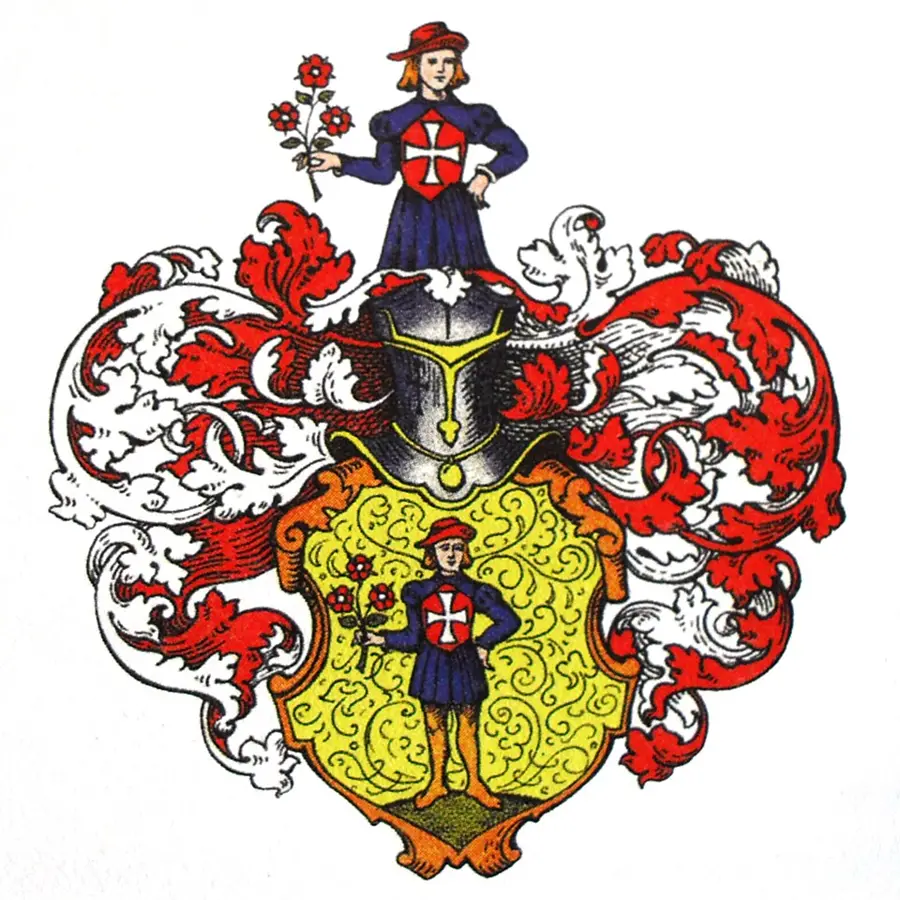
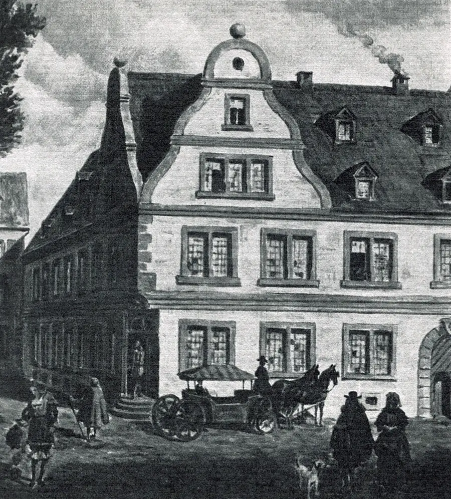
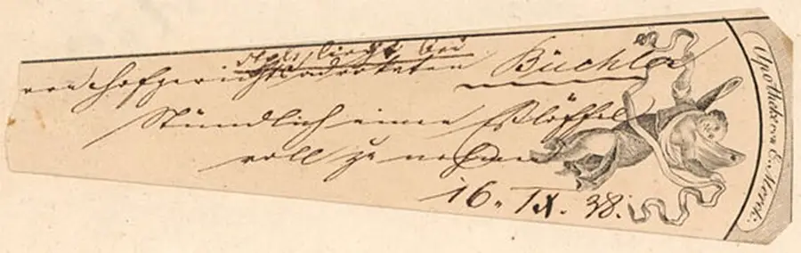
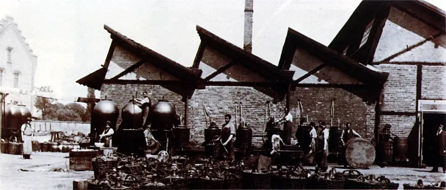

대표 로고대표 브랜드 마크
대표 로고대표 브랜드 마크머크 그룹 Merck KGaA
머크 그룹(Merck KGaA)은 독일의 과학기술기업이다. 의약, 생명과학, 전자 소재 분야의 제품을 생산하며, 1668년 다름슈타트에서 시작해 본사를 여전히 그곳에 두고 있다.
최종 업데이트
머크 그룹은 어떤 브랜드인가
머크 그룹(Merck KGaA)은 독일의 과학기술기업이다. 화학 분야에서는 반도체용 소재, 딜리버리 시스템 앤 서비스, 액정 및 OLED 디스플레이용 소재, 기능성 특수안료, 생명과학 산업용 장비와 시약을 생산한다.
의약 분야에서는 항암, 난임치료, 성장호르몬, 다발성 경화증 등 전문 신약 개발로 알려져 있다. 17세기 이래 사업을 계속하고 있어 현존하는 가장 오래된 과학기술기업이다.
의약, 생명과학, 전자 소재를 생산하는 글로벌 기업이며, 디스플레이 소재와 반도체 소재를 통해 전자산업 분야에서 중요한 위치를 차지한다. 프랑크푸르트 시장 표기는 MRK이다.
머크 그룹은 어떻게 시작되고 성장했나
1668년 독일 다름슈타트에서 Friedrich Jacob Merck가 천사약국을 인수하며 시작되었다. 이후 머크 가문의 후손들은 다름슈타트에서 대대로 약국을 운영했다.
19세기에 집안 사람 중 하나인 Emanuel Merck가 화학 사업까지 확대하며 회사를 성장시켰다. 액정은 1888년에 세계 최초로 개발했다.
미국의 MSD는 본래 머크 가문의 자회사로 출발했으나, 세계대전으로 미국 정부에 의해 머크앤드컴퍼니로 새롭게 출발한 회사이다.
머크 그룹의 브랜드 아이덴티티는 무엇인가
현존하는 가장 오래된 과학기술기업으로, 1668년 약국에서 출발해 의약·생명과학·전자 소재를 아우르는 독일 기업이다. 미국·캐나다에서는 EMD 명칭을 쓴다는 점도 특징이다.
머크 그룹의 대표 제품과 서비스는 무엇인가
화학 분야에서는 반도체용 소재, 딜리버리 시스템 앤 서비스, 액정 및 OLED 디스플레이용 소재, 기능성 특수안료를 생산한다. 생명과학 산업을 위한 장비와 시약도 공급한다.
의약 분야에서는 항암, 난임치료, 성장호르몬, 다발성 경화증 등을 다루는 전문 신약을 개발한다. 제품군은 전자 소재, 생명과학용 장비와 시약, 전문 의약품에 걸쳐 있다.
액정은 1888년에 세계 최초로 개발했으며, 디스플레이 소재와 반도체 소재는 전자산업에서 중요한 위치를 차지한다.
머크 그룹은 지금 어떤 상태인가
본사는 여전히 다름슈타트에 있으며, 미국과 캐나다를 제외한 190여개 국가에서 머크라는 브랜드를 사용한다. 미국과 캐나다에서는 머크앤드컴퍼니와의 협약에 따라 Emanuel Merck, Darmstadt의 약자인 EMD라는 명칭을 사용한다.
의약, 생명과학, 전자 소재를 생산하는 글로벌 기업이며 프랑크푸르트 시장 표기는 MRK이다.
머크 그룹 로고는 어떻게 변해왔나
대표 로고대표 브랜드 마크사진으로 보는 머크 그룹의 역사




자주 묻는 질문
머크 그룹는 어느 나라 브랜드인가요?
머크 그룹는 독일의 헬스·제약 브랜드입니다.
머크 그룹의 브랜드 아이덴티티는 무엇인가요?
현존하는 가장 오래된 과학기술기업으로, 1668년 약국에서 출발해 의약·생명과학·전자 소재를 아우르는 독일 기업이다.
머크 그룹의 대표 제품은 무엇인가요?
화학 분야에서는 반도체용 소재, 딜리버리 시스템 앤 서비스, 액정 및 OLED 디스플레이용 소재, 기능성 특수안료를 생산한다.
머크 그룹의 본사는 어디에 있나요?
본사는 여전히 다름슈타트에 있으며, 미국과 캐나다를 제외한 190여개 국가에서 머크라는 브랜드를 사용한다.
머크 그룹의 창업자는 누구인가요?
머크 그룹의 창업자는 Friedrich Jacob Merck, Heinrich Emanuel Merck, Carl Merck입니다(위키데이터 기준).
머크 그룹의 공식 웹사이트는 어디인가요?
머크 그룹의 공식 웹사이트는 http://www.merckgroup.com 입니다.
출처와 검증
머크 그룹 관련 참고: 공식 웹사이트 · 위키데이터 Q156959 · 한국어 위키백과 · 영어 위키백과. 브랜드명은 한글과 원어를 함께 표기하되 데이터에 없는 표기는 만들지 않습니다. 기원 국가·설립연도는 검수된 정의문에서 확인된 값을 우선하고, 없을 때만 공식 웹사이트 URL이 일치하는 위키데이터 개체의 값을 씁니다. 위키데이터 값은 2026-11-12 기준입니다.